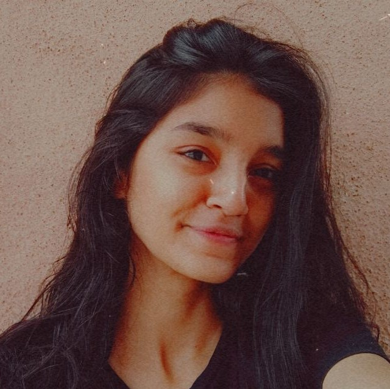

DO WE REALLY NEED PEOPLE?
By Prajkta Bhalgat
July 12, 2020
I have so may things to talk on this. I really wanted to share my thoughts on this. There are some ups and Downs in. Every person's life. My ups and downs were with some broken friendships issues with family but when I started understanding some little things my life changed
Do we really need people?
Whenever human beings find themselves alone,as natural reaction they start looking for a company.whenever they are in trouble, they look for someone to help them whenever they reach an impasse, they look to someone to show them the way out in short we find our own special helper .
Are we afraid of difficulties, sufferings and problems?
Answer is yes we are but there is a thing that we always find someone who will support us, whose thinking is same as us there is a very less chance of we getting connected to a person who is too different from us
So do we really need a dope of us ?
I don't think so , whenever you will start loving your own difficulties and solving them on your own that day you will start taking steps towards your success
About Prajkta
I'm an 18 year old girl who loves the nature and animals